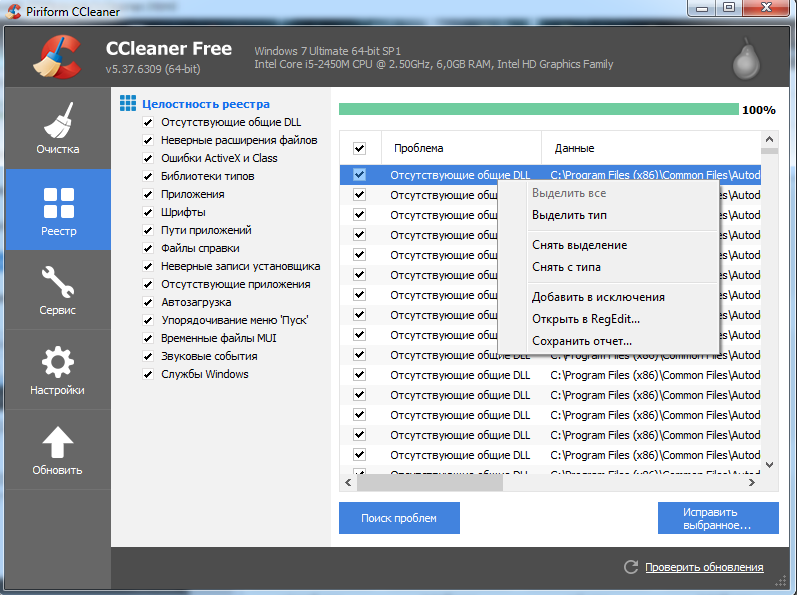
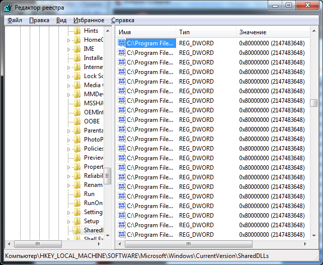
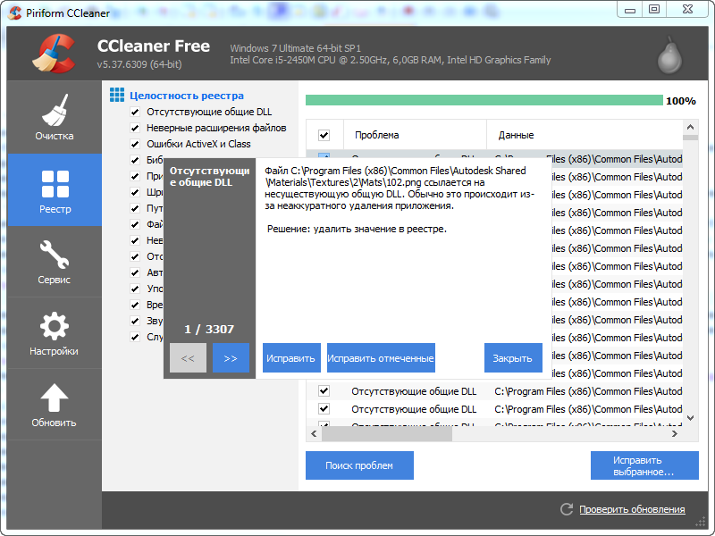
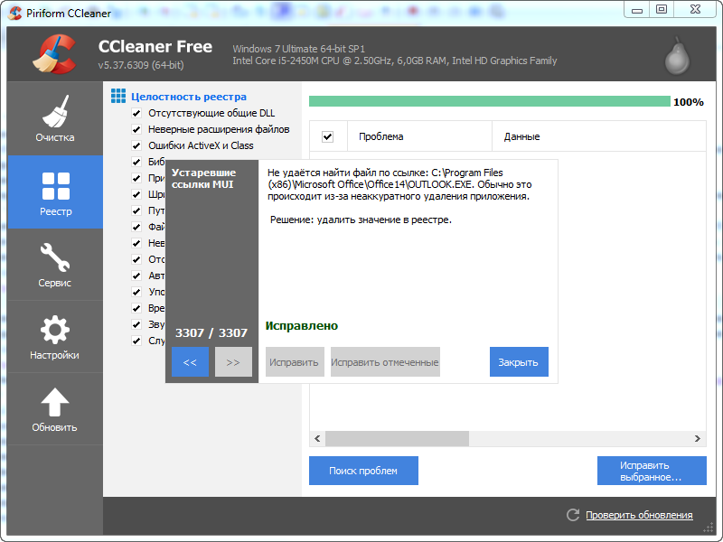
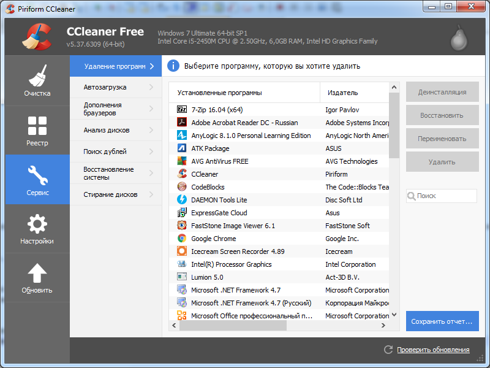
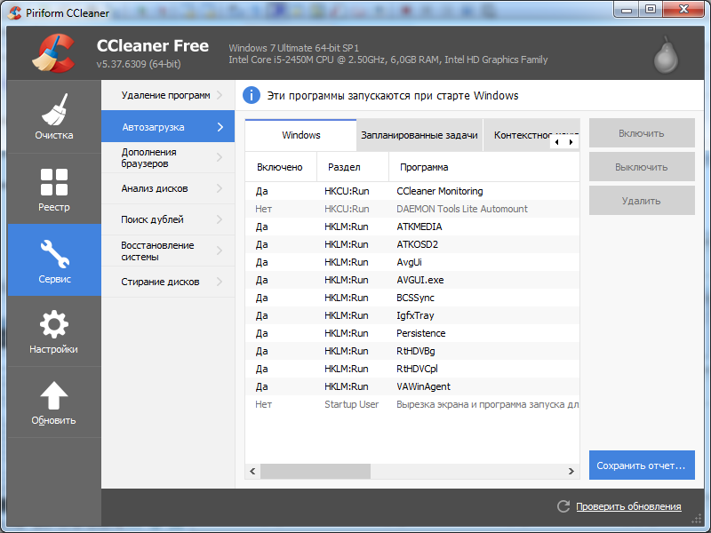

CCleaner "Нубекс" - лучшая бесплатная чистящая утилита, главные особенности которой - безопасное удаление мусора из системы, очистка жесткого диска от ненужных файлов и исправление ошибочных записей в реестре. ССКлинер проводит качественную оптимизацию Windows в ручном и автоматическом режиме.
Главное окно утилиты представляется в довольно простом и понятливом виде.
Главным открывается очистка системы от временных, кэш, куки файлов. Очистки браузеров, проводника, самой системы, приложений, утилит и от прочих файлов, занимающие пространство памяти.
Но перейдем к возможностям утилита по работе с реестром, в принципе, ради чего я и взял на рассмотрение CCleaner. В целом вся работа с реестром сводится к поиску проблем и ошибок и их исправления. Но так же можно определить в каких типах библиотек искать. Можно добавлять определенные проблемы в исключения, создавать отчет. Для подробного рассмотрения можно открыть проблему в RegEdit (Редактор реестра Windows)


Приступи к исправлению ошибок реестра. Я отметил все области. И мне выдало списком множество ошибок с название проблемы и расположением.
Перед тем, как приступить к исправлению открывается окно с предложением сохранить резервные копии:
Далее нам в окне по одному выводятся проблемы, краткое описание проблемы и её решение. Наше решение довольно простое, нужно лишь нажать исправить или же исправить все отмеченные ошибки, что сильно упрощает все действия:


Так же хочу отметить, что CCleaner является универсальной программой, так как позволяет выполнять помимо очистки и решения проблем реестра, ряд других сервисных операций.
Доступ к удалению/восстановлению программ. Весьма полезная функиция назначение автозагрузки Windows, включение и выключению запланирванных задач. Анализ дисков, поиск дублей, восстановление системы и даже управление дополенениями браузера


Подробнее про возможности можете рассмотреть на русскоязычном сайте программы http://ccleaner4you.ru/
Возможности CCleaner исправления реестра:
Официальный сайт разработчиков программы: http://www.piriform.com/ccleaner